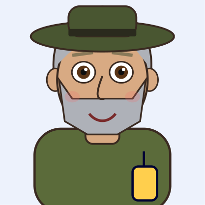

Download the full detective booklet (PDF) with all profiles and evidence sheets.
What happened
Every Christmas Eve the Christmas Star is carried from the Star Vault at the top of the North Pole Observatory and placed on the great village tree. This year it has gone. In the early hours of 1 December the whole Observatory tower suffered a power cut, the Blackout, from 01:20 to 01:50. When the lights came back the Vault door was shut but the Star's glass case was empty.
What the police know for certain
The Vault door sensor shows it opened at 01:20 and shut at 01:50: the thief was inside the tower for the whole Blackout. There are 24 suspects and exactly one thief. Every suspect gave an alibi, but an alibi is only a claim until it is proved. Clear a suspect only when evidence proves they were elsewhere at any moment between 01:20 and 01:50, or could not have done it.
How to play
Each day, scan the new code, solve the puzzle, then open the locked box to check your answer and read the new evidence and who is cleared. Use the suspect files below, the Detective toolkit and the Elimination board. Beware of red herrings: clues that look important but have an innocent explanation.
No. 01Thomas Bennett
Reindeer stable manager
183 cm tall
UL – Ulnar Loop
Age52 years
Height183 cm
Eye colourBrown
Hair colourGrey
GlassesNo
Boot size (UK)11
Dominant handRight
Fingerprint typeUL Ulnar Loop
Criminal recordNO – clean record
Alibi (a claim, unverified until proved)Says he was feeding the reindeer in the Stable all night.
Access to rooms and keysReindeer Stable; Feed Store; Sleigh Hangar (side door).
Clothing detailsBrown flat cap, green waxed coat, hay-stained brown boots. Size 11 boots.
No. 02Oliver Hayes
Toy repair technician
175 cm tall
PW – Plain Whorl
Age34 years
Height175 cm
Eye colourBlue
Hair colourBrown
GlassesYes
Boot size (UK)9
Dominant handRight
Fingerprint typePW Plain Whorl
Criminal recordNO – clean record
Alibi (a claim, unverified until proved)Says he was mending a toy train alone in the Toy Workshop.
Access to rooms and keysToy Workshop; Gift Hall store; Repair Annex.
Clothing detailsBlue overalls, tool belt, orange woolly hat, round glasses. Size 9 boots.
No. 03Amelia Carter
Head baker
162 cm tall
UL – Ulnar Loop
Age47 years
Height162 cm
Eye colourBrown
Hair colourBlack
GlassesNo
Boot size (UK)4
Dominant handRight
Fingerprint typeUL Ulnar Loop
Criminal recordNO – clean record
Alibi (a claim, unverified until proved)Says she was baking mince pies in the Bakery.
Access to rooms and keysBakery; Sweet Kitchen (shared); Village Hall kitchen.
Clothing detailsWhite apron over a red jumper, black hair net, flour on sleeves. Size 4 boots.
No. 04Daniel Fletcher
Postroom supervisor
178 cm tall
RL – Radial Loop
Age41 years
Height178 cm
Eye colourGreen
Hair colourBrown
GlassesNo
Boot size (UK)10
Dominant handLeft
Fingerprint typeRL Radial Loop
Criminal recordNO – clean record
Alibi (a claim, unverified until proved)Says he was sorting the night mail in the Post Room.
Access to rooms and keysPost Room; Letter Office; Sorting Depot.
Clothing detailsNavy postal jacket, peaked cap, long yellow scarf. Size 10 boots.
No. 05Edward Collins
Sleigh mechanic
188 cm tall
PW – Plain Whorl
Age38 years
Height188 cm
Eye colourBrown
Hair colourBlack
GlassesNo
Boot size (UK)12
Dominant handRight
Fingerprint typePW Plain Whorl
Criminal recordYES – Speeding a sleigh through a village (2019)
Alibi (a claim, unverified until proved)Says he was servicing sleigh runners in the Sleigh Hangar.
Access to rooms and keysSleigh Hangar; Test Airfield; Tool Store.
Clothing detailsGrey boiler suit, oily hands, welding goggles pushed up on forehead. Size 12 boots.
No. 06Sophie Williams
Librarian
168 cm tall
TA – Tented Arch
Age31 years
Height168 cm
Eye colourBlue
Hair colourBlonde
GlassesYes
Boot size (UK)5
Dominant handRight
Fingerprint typeTA Tented Arch
Criminal recordNO – clean record
Alibi (a claim, unverified until proved)Says she was cataloguing books in the Library. Nobody saw her.
Access to rooms and keysLibrary; Archive Vault; Observatory Reading Room.
Clothing detailsMustard cardigan, blue scarf, rectangular glasses. Size 5 boots.
No. 07James Parker
Choir director
171 cm tall
UL – Ulnar Loop
Age59 years
Height171 cm
Eye colourHazel
Hair colourGrey
GlassesYes
Boot size (UK)8
Dominant handLeft
Fingerprint typeUL Ulnar Loop
Criminal recordNO – clean record
Alibi (a claim, unverified until proved)Says he was rehearsing the carol choir until 2 am.
Access to rooms and keysChoir Hall; Chapel; Bell Tower.
Clothing detailsBlack choir robe, red bow tie, silver baton tucked in a pocket. Size 8 boots.
No. 08Rebecca Foster
Snow patrol officer
177 cm tall
DL – Double Loop
Age36 years
Height177 cm
Eye colourGrey
Hair colourBrown
GlassesNo
Boot size (UK)7
Dominant handRight
Fingerprint typeDL Double Loop
Criminal recordNO – clean record
Alibi (a claim, unverified until proved)Says she was patrolling the snow fences on the north ridge.
Access to rooms and keysSnow Patrol Lodge; Ski-lift Station; Observatory Gate patrol key; Reindeer Stable.
Clothing detailsOrange hi-vis jacket, white snow beanie, grey scarf. Size 7 boots.
No. 09Charlotte Morgan
Gift department assistant
158 cm tall
AR – Plain Arch
Age26 years
Height158 cm
Eye colourBrown
Hair colourBlonde
GlassesNo
Boot size (UK)4
Dominant handRight
Fingerprint typeAR Plain Arch
Criminal recordYES – Taking sweets from a shop without paying (2022)
Alibi (a claim, unverified until proved)Says she was counting parcels in the Gift Hall store.
Access to rooms and keysGift Hall; Gift Store; Wrapping Room (day only).
Clothing detailsPink elf tunic, green striped tights, blonde pigtails. Size 4 boots.
No. 10Henry Mitchell
Gift wrapper
185 cm tall
PW – Plain Whorl
Age55 years
Height185 cm
Eye colourBlue
Hair colourGrey
GlassesYes
Boot size (UK)11
Dominant handRight
Fingerprint typePW Plain Whorl
Criminal recordNO – clean record
Alibi (a claim, unverified until proved)Says he was wrapping parcels in the Wrapping Room.
Access to rooms and keysWrapping Room; Gift Hall; Ribbon Store.
Clothing detailsRed apron, tape dispenser on belt, half-moon glasses. Size 11 boots.
No. 11Grace Thompson
Decoration designer
170 cm tall
UL – Ulnar Loop
Age29 years
Height170 cm
Eye colourGreen
Hair colourRed
GlassesNo
Boot size (UK)6
Dominant handLeft
Fingerprint typeUL Ulnar Loop
Criminal recordNO – clean record
Alibi (a claim, unverified until proved)Says she was painting baubles in the Design Studio.
Access to rooms and keysDesign Studio; Decoration Store; Paint Room.
Clothing detailsPaint-splattered smock, purple headband. Size 6 boots.
No. 12Alexander Brooks
Visitor from Lapland
190 cm tall
PW – Plain Whorl
Age44 years
Height190 cm
Eye colourGrey
Hair colourBlack
GlassesNo
Boot size (UK)12
Dominant handRight
Fingerprint typePW Plain Whorl
Criminal recordYES – Smuggling reindeer moss (2018)
Alibi (a claim, unverified until proved)Says he was asleep in the Guest House.
Access to rooms and keysGuest House (visitor pass); Village Square.
Clothing detailsHeavy Lapland fur coat, blue embroidered hat. Size 12 boots.
No. 13Emily Richardson
Greenhouse manager
172 cm tall
DL – Double Loop
Age42 years
Height172 cm
Eye colourHazel
Hair colourBrown
GlassesNo
Boot size (UK)7
Dominant handRight
Fingerprint typeDL Double Loop
Criminal recordYES – Trespassing in Santa's orchard (2016)
Alibi (a claim, unverified until proved)Says she was watering night orchids in the Greenhouse.
Access to rooms and keysGreenhouse; Seed Store; Observatory Garden Door.
Clothing detailsGreen gardening apron, straw hat, muddy gloves. Size 7 boots.
No. 14William Turner
Christmas shop manager
179 cm tall
UL – Ulnar Loop
Age49 years
Height179 cm
Eye colourBrown
Hair colourBrown
GlassesYes
Boot size (UK)10
Dominant handRight
Fingerprint typeUL Ulnar Loop
Criminal recordNO – clean record
Alibi (a claim, unverified until proved)Says he was doing stock-take in the Christmas Shop.
Access to rooms and keysChristmas Shop; Stockroom; Cash Office.
Clothing detailsTartan waistcoat, name badge, spectacles on a cord. Size 10 boots.
No. 15Lucy Harrison
Lighting technician
165 cm tall
DL – Double Loop
Age30 years
Height165 cm
Eye colourBrown
Hair colourAuburn
GlassesNo
Boot size (UK)5
Dominant handRight
Fingerprint typeDL Double Loop
Criminal recordNO – clean record
Alibi (a claim, unverified until proved)Says she was fixing a lighting fault at Lighting Control once the lights failed.
Access to rooms and keysLighting Control; Generator House; Observatory roof lights panel.
Clothing detailsYellow safety vest, head-torch, tool belt. Size 5 boots.
No. 16George Anderson
Ice sculptor
176 cm tall
CP – Central Pocket Whorl
Age63 years
Height176 cm
Eye colourBlue
Hair colourGrey
GlassesNo
Boot size (UK)9
Dominant handRight
Fingerprint typeCP Central Pocket Whorl
Criminal recordYES – Knocking down snowmen (2020)
Alibi (a claim, unverified until proved)Says he was carving an ice reindeer in the Ice Workshop.
Access to rooms and keysIce Workshop; Cold Store; Observatory Entrance Hall.
Clothing detailsGrey insulated parka, ear defenders, safety goggles. Size 9 boots.
No. 17Mia Mitchell
Observatory assistant
164 cm tall
DL – Double Loop
Age29 years
Height164 cm
Eye colourHazel
Hair colourBrown
GlassesNo
Boot size (UK)5
Dominant handLeft
Fingerprint typeDL Double Loop
Criminal recordNO – clean record
Alibi (a claim, unverified until proved)Says she finished the star logs, left the Observatory at 00:50 and walked home to bed.
Access to rooms and keysObservatory (staff door, dome, star-chart room); Telescope Store; Staff Canteen.
Clothing detailsNavy duffel coat, teal scarf, small notebook in pocket. Size 5 boots.
No. 18Benjamin Clarke
Sweet maker
169 cm tall
AR – Plain Arch
Age45 years
Height169 cm
Eye colourBrown
Hair colourBlack
GlassesYes
Boot size (UK)8
Dominant handRight
Fingerprint typeAR Plain Arch
Criminal recordNO – clean record
Alibi (a claim, unverified until proved)Says he was boiling toffee in the Sweet Kitchen.
Access to rooms and keysSweet Kitchen; Sugar Store; Bakery (shared ovens).
Clothing detailsStriped candy apron, tall paper hat, round glasses. Size 8 boots.
No. 19Jessica Ward
Weather station operator
166 cm tall
PW – Plain Whorl
Age33 years
Height166 cm
Eye colourGreen
Hair colourBlack
GlassesNo
Boot size (UK)5
Dominant handLeft
Fingerprint typePW Plain Whorl
Criminal recordNO – clean record
Alibi (a claim, unverified until proved)Says she was logging storm readings at the Weather Station.
Access to rooms and keysWeather Station; Observatory roof instruments; Radio Hut.
Clothing detailsYellow waterproof coat, wind-meter on a lanyard. Size 5 boots.
No. 20Samuel Cooper
Christmas tree decorator
181 cm tall
UL – Ulnar Loop
Age35 years
Height181 cm
Eye colourBrown
Hair colourBrown
GlassesNo
Boot size (UK)10
Dominant handRight
Fingerprint typeUL Ulnar Loop
Criminal recordYES – Dangerous driving of a tree lorry (2021)
Alibi (a claim, unverified until proved)Says he was loading trees onto the lorry in the Tree Yard.
Access to rooms and keysTree Yard; Decoration Store; Tree Lorry Shed.
Clothing detailsRed check lumberjack shirt, woolly beanie, thick gloves. Size 10 boots.
No. 21Olivia Bennett
Letter department supervisor
163 cm tall
RL – Radial Loop
Age50 years
Height163 cm
Eye colourBrown
Hair colourGrey
GlassesYes
Boot size (UK)5
Dominant handRight
Fingerprint typeRL Radial Loop
Criminal recordNO – clean record
Alibi (a claim, unverified until proved)Says she was reading children's letters in the Letter Office.
Access to rooms and keysLetter Office; Post Room; Santa's Study mailbag drop.
Clothing detailsBurgundy blazer, pearl necklace, glasses on a chain. Size 5 boots.
No. 22Charlie Edwards
Clothing and glove maker
173 cm tall
TA – Tented Arch
Age27 years
Height173 cm
Eye colourBlue
Hair colourBlonde
GlassesNo
Boot size (UK)8
Dominant handLeft
Fingerprint typeTA Tented Arch
Criminal recordNO – clean record
Alibi (a claim, unverified until proved)Says he was stitching gloves in the Tailor Room.
Access to rooms and keysTailor Room; Glove Store; Wardrobe Annex.
Clothing detailsPatchwork jacket, tape measure round neck, knitted gloves. Size 8 boots.
No. 23Abigail Scott
Sleigh test pilot
167 cm tall
CP – Central Pocket Whorl
Age32 years
Height167 cm
Eye colourBrown
Hair colourRed
GlassesNo
Boot size (UK)6
Dominant handRight
Fingerprint typeCP Central Pocket Whorl
Criminal recordNO – clean record
Alibi (a claim, unverified until proved)Says she was flying a night test circuit over the airfield.
Access to rooms and keysTest Airfield; Sleigh Hangar; Reindeer Stable.
Clothing detailsLeather flying helmet, aviator jacket, goggles on forehead. Size 6 boots.
No. 24Frederick Wilson
Forest ranger

184 cm tall
UL – Ulnar Loop
Age57 years
Height184 cm
Eye colourBrown
Hair colourGrey
GlassesNo
Boot size (UK)12
Dominant handRight
Fingerprint typeUL Ulnar Loop
Criminal recordNO – clean record
Alibi (a claim, unverified until proved)Says he was walking the forest paths with his lantern.
Access to rooms and keysRanger Hut; Forest Gate; Tree Yard; Master gate key.
Clothing detailsOlive ranger uniform, wide-brimmed hat, carrying a lantern. Size 12 boots.